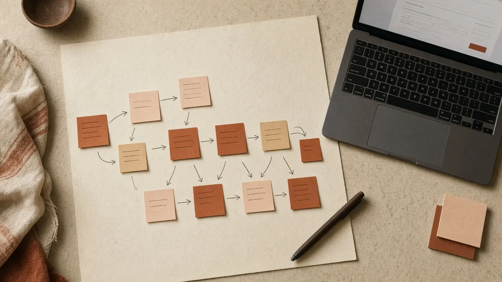
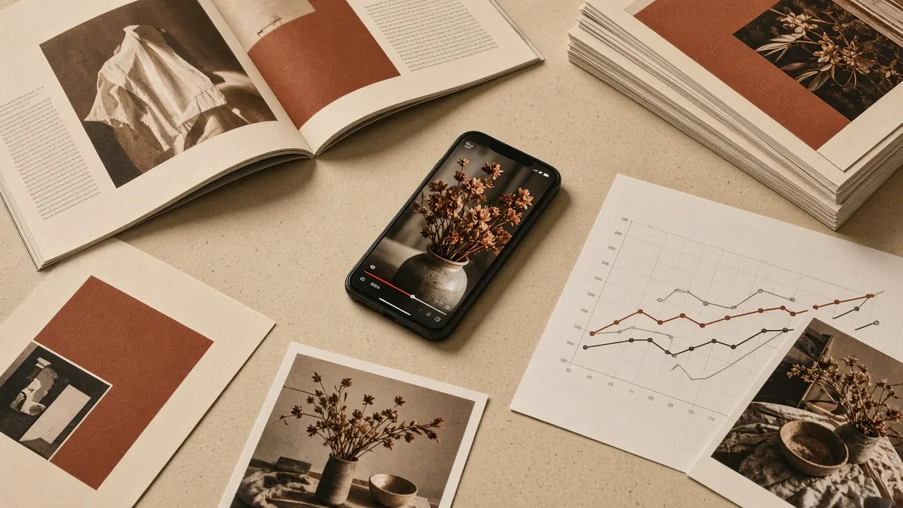

第一章
基于企业知识库构建定制化智能体
把企业的知识库、业务规则和岗位分工接进智能体。接到任务后，它先查资料、按规则判断，再调用工具完成操作，把结果交给对应的人。支持私有化部署，数据留在企业自己的服务器上。
支持私有化部署，数据留在企业自己的服务器上。
为企业与机构提供 AI 赋能培训、场景共创与系统落地实践。
预约一次 AI 场景诊断第一章
把企业的知识库、业务规则和岗位分工接进智能体。接到任务后，它先查资料、按规则判断，再调用工具完成操作，把结果交给对应的人。支持私有化部署，数据留在企业自己的服务器上。
支持私有化部署，数据留在企业自己的服务器上。

第二章
把重复性工作拆成模块，接上数据源、接口、表单和审批，做成团队每天都在用的内部工具。可以按项目或按模块开发，也可以在现有系统上加 AI 功能，或与贵司 IT 联合交付。
也可以在现有系统上加 AI 功能，或与贵司 IT 联合交付。
第三章
适用于公文、报告、会议纪要、方案初稿和汇报材料。我们把各岗位的写作规范和常用素材整理成可反复使用的提示词和 Skill，新人也能写出符合规范的初稿。
新人也能写出符合规范的初稿。

第四章
实现营销全链路闭环：通过市场及用户洞察，深度研判行业走向、竞品动向与用户需求；赋能营销决策，制定对应营销策略；规模化生产图文、短视频内容，多渠道分发；同步落地 GEO 与 SEO 监测，跟踪品牌在 AI 搜索、大模型回答中的露出情况，联动投放数据开展效果复盘，迭代优化后续营销动作。
同步落地 GEO 与 SEO 监测，跟踪品牌在 AI 搜索、大模型回答中的露出情况
客户名称已隐去。
500+维修案例
案例 01 · 智能体定制
私有化部署，录入 500+ 维修案例和 103 条规范，自动给出维修方案并追溯责任。
60名学员
案例 02 · 企业内训
半天实战课，覆盖市场、设计、文案和管理层约 60 名学员。
7期训练营
案例 03 · 训练营
高校 4 期近 200 人、司法 3 期近 100 人，带练、点评并结营验收。
87.5%月度成本下降
案例 04 · 系统落地
替代大量人工审核，月度成本下降约 87.5%。
了解业务现状与目标
筛选值得做的 AI 场景
拆成可执行的模块
确认内容、周期与报价
培训或开发按计划落地
跟进使用并持续改进
培训前
我们会先做访谈调研，按需定制课纲，准备好练习环境，不用通用课件。
培训后
我们会辅导作业、评选成果，并跟进实际使用情况。
联系
电话 / 微信
18046508566